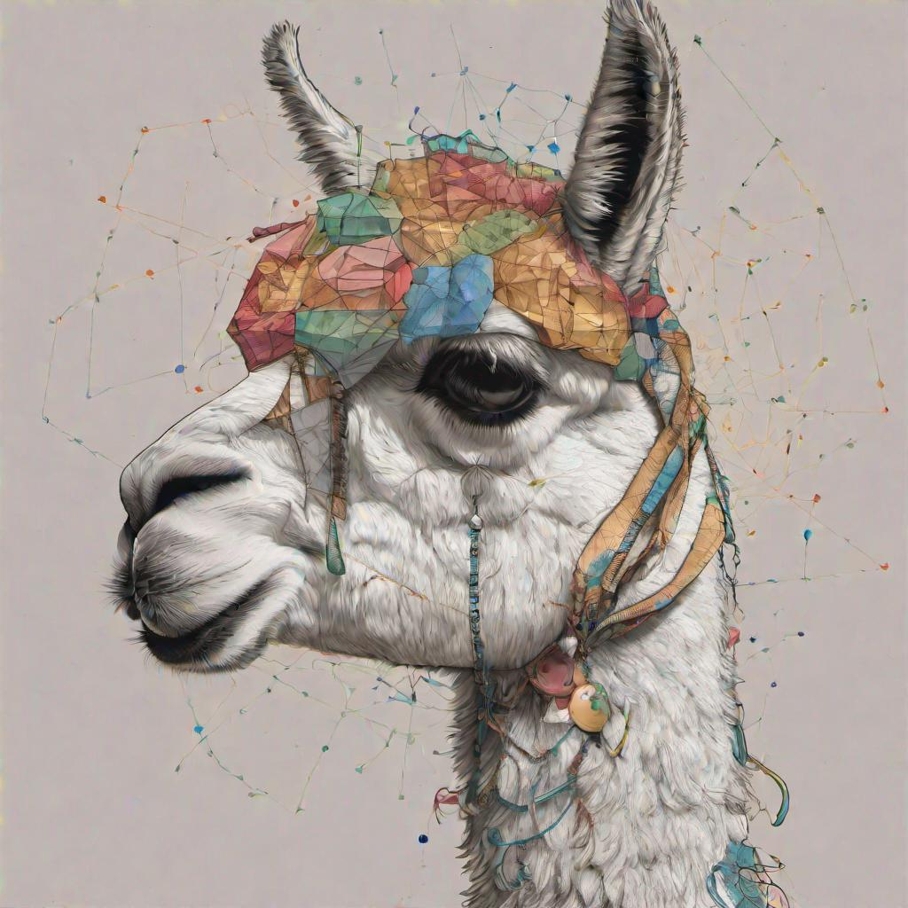

At the University of Notre Dame’s Center for Research Computing (CRC), the Laboratory for Assured AI Applications Development (LA3D) represents a critical step in the field of artificial intelligence (AI). As part of CRC’s commitment to leveraging advanced computation for discovery and innovation, LA3D focuses on ensuring the responsible development and application of AI technologies. This initiative aligns with both the technological evolution of AI and the broader goals of CRC and Notre Dame.
The mission of LA3D is robust, layered, and rooted in a commitment to research, develop, and deploy AI models and systems that are not just innovative but trustworthy and ethically aligned. With a focus on AI Engineering, Trusted AI, Knowledge Engineering, FAIR (Findable, Accessible, Interoperable, and Reusable) data, and CyberInfrastructure, LA3D presents a multifaceted approach.
AI’s Transformative Potential: The transformative potential of AI is no longer a distant aspiration but a present-day reality. Whether in healthcare, finance, transportation, or education, AI’s capacity to innovate is unparalleled. LA3D recognizes this potential and strives to harness it, directing AI’s power towards constructive, ethical, and sustainable ends.
Connection to the Center for Research Computing: LA3D’s home in the CRC is more than a mere geographical placement. It symbolizes a shared vision of advancing science through computational methods, high-performance computing, and now, AI-driven solutions. By integrating into the CRC’s vibrant ecosystem, LA3D amplifies the pursuit of excellence, pushing the boundaries of what’s achievable with AI.
Mission Overview: LA3D’s mission transcends traditional boundaries, aiming to advance fields like AI Engineering, with its critical role in transitioning prototypes to production; Trusted AI, embodying ethical and reliable systems; Knowledge Engineering, embracing the new frontiers of Large Language Models; FAIR data principles; and the rapidly evolving CyberInfrastructure. Each of these elements comes together to create a synergy that fuels LA3D’s ambition to lead AI into an era marked by integrity, ingenuity, and human-centric focus.
The launch of LA3D marks a promising beginning in a journey filled with exploration, challenge, and opportunity. It sets the stage for an intellectual adventure that seeks to navigate the complex landscape of AI, unlocking its potentials while remaining anchored to values and ethical principles. Welcome to the Laboratory for Assured AI Applications Development – a place where AI’s promise transforms into tangible progress.
The Imperative of the Disciplines
AI Engineering: Bridging the Gap from Prototype to Production
In the complex, multifaceted realm of AI, the journey from concept to realization is fraught with challenges and intricacies. AI Engineering, a core discipline at the Laboratory for Assured AI Applications Development (LA3D), stands as a beacon guiding this intricate transition from prototypes to production-grade applications.
Transitioning Prototypes to Production: At LA3D, we recognize that the gap between experimental AI prototypes and fully functional production systems is vast. AI Engineering provides the methodologies, tools, and practices needed to navigate this gap. It’s about ensuring that promising concepts don’t just remain on paper but evolve into tangible applications. The recent Gartner research resonates with our approach, identifying that only 53% of AI projects transition from prototypes to production, underscoring the need for an engineering-driven approach.
Core Pillars: DataOps, ModelOps, DevOps: DataOps focuses on data management and quality, ModelOps on model lifecycle management, and DevOps for seamless integration. These three core pillars together facilitate performance, scalability, interpretability, and reliability of AI models, maximizing the value of AI investments.
Assurance in AI Models and Mechanistic Interpretability: Assurance in AI Models and Mechanistic Interpretability: Trust and reliability lie at the core of AI Engineering. At LA3D, the utilization of energy-based modeling, specifically Joint Energy-Based Models (JEMs), offers a transparent and statistically grounded approach to AI. By learning joint distributions over observed and latent variables, and associating lower energies with more likely configurations, JEMs help in aligning AI models with ethical guidelines and intended purposes. This mechanistic interpretability, coupled with the robust design inherent in JEMs, ensures predictability and engenders trust. Such alignment is vital for Assured AI, where understanding the underlying patterns and regularities in data becomes a cornerstone for creating reliable and responsible applications.
Scalability, Efficiency, Lifecycle Management, and Data-Centric AI: Ensuring consistent performance across different scales and complexities is crucial. LA3D’s AI Engineering practices enable models to be deployed in various environments without losing integrity or performance. Managing AI models throughout their lifecycle through continuous monitoring, validation, and maintenance ensures adaptability and alignment with evolving objectives. The emphasis on Data-Centric AI reflects LA3D’s commitment to focusing on the quality of data, recognizing that data is the lifeblood of AI systems.
Interdisciplinary Collaboration and Alignment with Human Values: AI Engineering fosters collaboration among data scientists, engineers, domain experts, and ethical compliance teams. The result is cohesive AI development, where varying perspectives merge to create solutions resonating with diverse needs and values. At LA3D, AI serves human values and societal needs, ensuring that technology is not only technically sound but also socially responsible.
Embracing CyberSecurity: Coupled with a growing interest in CyberSecurity, LA3D extends the scope of AI Engineering to safeguard information and assure security in AI applications.
AI Engineering is not merely a process at LA3D; it’s a philosophy and an imperative discipline. It’s the bedrock that ensures AI models are not just innovative but also responsible, practical, and aligned with the human experience. Bridging the gap from prototype to production, AI Engineering paves the way for a future where AI is not just a tool but a reliable partner for progress. Join us on this journey as we delve deeper into AI Engineering, exploring its challenges, triumphs, and nuances.
Trusted AI: A Cornerstone of Ethical and Reliable Systems
Trusted AI is not just a concept; it’s a commitment to integrity, ethics, and societal alignment that LA3D wholeheartedly embraces. Trust in AI is an essential component in our technological landscape, and it embodies various facets that work in synergy to create ethical and reliable systems.
Assurance in AI Models: At LA3D, assurance goes beyond mere compliance; it’s about creating AI models that can be understood, scrutinized, and validated. Building AI models that can explain their reasoning and provide clarity in their decisions is integral to creating trust.
Transparency and Accountability: The quest for Trusted AI demands complete transparency in both process and outcomes. LA3D adheres to an open and comprehensible approach that allows all stakeholders to understand how decisions are made and who is accountable for them. Ensuring this level of transparency fosters an environment where AI models can be thoroughly evaluated and critiqued, reinforcing trust in their use.
Responsible AI: While Trusted AI focuses on reliability and ethics, Responsible AI broadens the spectrum to include considerations such as fairness, inclusivity, privacy, and societal impact. At LA3D, we recognize that AI systems must not only operate within ethical guidelines but also actively contribute to the well-being of society. This commitment to social responsibility aligns with our holistic approach to developing technology that enriches lives.
CyberSecurity in AI: As AI systems become more intertwined with our daily lives, the need to secure them becomes paramount. LA3D is committed to incorporating CyberSecurity measures within the AI development process, safeguarding data and protecting the integrity of AI systems. We understand that trust in AI also depends on the security of the systems, and we dedicate our resources to ensure that our AI applications are robust against threats.
Trusted AI is a cornerstone at LA3D, reflecting our relentless pursuit of aligning technology with human values and ethical principles. It’s about creating AI that people can rely on, understand, and feel safe using. The interplay between transparency, accountability, Responsible AI, and CyberSecurity forms a unified approach to build AI systems that not only perform exceptionally but also resonate with the broader societal goals.
Join us as we explore further the nuances of Trusted AI, a field where technology and ethics merge to pave the way for a future where AI is a dependable ally. Our commitment to this discipline underscores the depth of our understanding of the complexities involved in crafting AI that is truly trusted.
This section outlines the key areas of Trusted AI that LA3D focuses on, emphasizing the importance of trust, transparency, responsibility, and security within the AI domain. It underscores the laboratory’s dedication to ethical and reliable AI systems, aligning with societal needs and values.
Knowledge Engineering and Prompt Engineering: The New Frontiers
In the rapidly evolving landscape of artificial intelligence, Knowledge Engineering and Prompt Engineering emerge as exciting new frontiers that promise to reshape the way we conceptualize, create, and leverage AI systems. At the Laboratory for Assured AI Applications Development (LA3D), we recognize the vital role of these disciplines in shaping the next generation of AI applications.
Knowledge Graphs: Knowledge graphs represent a transformative approach to organizing and connecting information. By modeling relationships between entities in a structured and semantically rich format, knowledge graphs enable more intelligent querying and reasoning. LA3D actively leverages knowledge graphs to power more insightful and context-aware AI solutions.
Ontology Design Patterns: A specialized aspect of Knowledge Engineering, ontology design patterns allow for the formal representation of concepts and their relationships within a specific domain. By utilizing these patterns, LA3D ensures that AI systems have a solid conceptual foundation, enabling more precise interpretation and decision-making.
LLM Techniques: Large Language Models (LLMs) are revolutionizing natural language processing. By employing techniques like Prompt Engineering, LA3D refines the interaction with LLMs, enhancing their responsiveness and adaptability. This method allows for more effective communication with AI systems, aligning them closer to human-like understanding.
AI Models as Surrogates: At LA3D, we explore the exciting potential of AI models as surrogates for complex mathematical or physical models. These AI surrogates can provide faster and more accessible simulations, accelerating research and opening new avenues for exploration in science and engineering.
AI Co-Pilots for Various Tasks: Beyond acting as mere tools, AI models are now being developed as intelligent co-pilots, assisting human experts in a variety of tasks. Whether aiding in data analysis, guiding complex problem-solving, or enhancing creative processes, AI co-pilots represent a new paradigm of collaboration between human and machine intelligence.
Knowledge Engineering and Prompt Engineering are not mere additions to the AI toolkit; they are pivotal advancements that herald a new era in AI application design and interaction. By embracing these new frontiers, LA3D reinforces its commitment to innovation, excellence, and the relentless pursuit of AI that is not just cutting-edge but profoundly attuned to human needs and aspirations. Join us as we explore these new horizons, uncovering the immense potential and profound implications they hold for the future of AI.
The Evolution of CyberInfrastructure and AI-Driven Science AI-Driven Science
The seamless integration of CyberInfrastructure with AI-driven science marks a transformative phase in research and innovation. As part of the Laboratory for Assured AI Applications Development (LA3D) at the University of Notre Dame’s Center for Research Computing (CRC), we are at the forefront of this exciting convergence, pioneering approaches that harness the power of advanced computing technologies to accelerate scientific discovery.
AI-Driven Science: The infusion of AI into scientific research has ushered in a new era of data-driven exploration and insight. At LA3D, we employ AI models to analyze complex data sets, predict outcomes, and even guide experimental design. From enhancing medical diagnostics to predicting climate patterns, AI-driven science is unlocking unprecedented opportunities for understanding and innovation.
Relevance to CRC: The Center for Research Computing at Notre Dame is committed to providing cutting-edge computational resources and expertise. The collaboration with LA3D amplifies this commitment by aligning AI research with state-of-the-art CyberInfrastructure. Together, we’re pushing the boundaries of what’s possible in computational science.
AI Surrogates for Mathematical Models: Building on the AI surrogates concept, we utilize AI models to replicate complex mathematical or physical systems within CRC. These surrogates enable faster simulations and insights, thus accelerating research and expanding our ability to tackle previously intractable problems.
AI Co-Pilots for Scientific Exploration: The development of AI co-pilots has extended into the realm of scientific exploration at CRC. These intelligent systems act as collaborators, assisting researchers in hypothesis formulation, data analysis, and problem-solving. It’s a revolutionary approach that augments human intelligence with AI, fostering a new level of creativity and rigor in scientific inquiry.
Integration of CyberInfrastructure: A robust CyberInfrastructure is foundational to AI-driven science at CRC. By weaving together high-performance computing, cloud technologies, and specialized software, we’re creating a dynamic environment where AI and computational science flourish. It’s a synergy that optimizes research processes, enhances collaboration, and catalyzes breakthroughs.
The evolution of CyberInfrastructure and AI-driven science at CRC represents more than technological advancement; it’s a paradigm shift in how we approach research and discovery. Through strategic collaboration and relentless innovation, we’re crafting a future where technology and human intellect unite to illuminate the unknown. Join us on this path, as we explore the incredible potential and promise of this convergence, continually striving to redefine the boundaries of what is possible in science and beyond.
Blog’s Objective and Overview
In alignment with the University of Notre Dame’s mission to seek knowledge that addresses humanity’s pressing challenges, and the Center for Research Computing’s (CRC) commitment to driving innovation, the Laboratory for Assured AI Applications Development (LA3D) is pleased to unveil this blog as an essential platform.
Weekly Updates: Engage with regular insights into the ongoing research, technological advancements, and creative pursuits within LA3D. From AI Engineering to Trusted AI, we’ll keep our community abreast of the exciting developments shaping our field.
Insights into Trusted AI, CI-Compass, and More: Delve into the core projects and collaborations within LA3D, including specialized explorations into the worlds of Trusted AI, CI-Compass, CyberSecurity in AI, and the nuances of Responsible AI.
AI Workforce Development: Recognizing the need for a skilled and knowledgeable AI workforce, this blog will feature initiatives, programs, and strategies dedicated to cultivating the next generation of AI professionals. Together with CRC, we strive to foster education, mentorship, and career development in AI.
Research Publications and Highlights: Discover the rich tapestry of research being woven at LA3D. We’ll highlight key publications, conference achievements, and innovative studies that reflect our commitment to excellence and alignment with Notre Dame’s values.
Community Engagement and Collaboration: Building on Notre Dame’s emphasis on community and service, this blog invites you to participate, share, and learn. Join a lively dialogue that celebrates diversity of thought and collaboration in pursuit of a greater understanding of Assured AI.
Spotlight on CyberSecurity in AI and Emerging Topics: As part of our comprehensive view of modern AI, we will dedicate specific sections to explore critical areas like CyberSecurity and the delicate balance between Responsible and Trusted AI.
Connection to Notre Dame’s and CRC’s Mission: This blog embodies the spirit of Notre Dame and CRC’s shared mission to advance knowledge, foster innovation, and contribute to society. We strive to make the pursuit of AI not only a scientific endeavor but also a means to enrich lives and address societal needs.
In the introduction, we’ve outlined the essential areas of focus at the Laboratory for Assured AI Applications Development (LA3D) at the University of Notre Dame’s Center for Research Computing. From AI Engineering’s crucial role in transitioning prototypes to production, to the ethical imperatives in Trusted AI, Knowledge Engineering, CyberSecurity in AI, and the blog’s alignment with the missions of CRC and Notre Dame, we’ve set the stage for a comprehensive exploration.
Our blog serves as a platform to dive into these topics, including AI workforce development and the ways in which AI intersects with societal needs and technological advancements. As we move forward, we’ll examine these subjects in detail, shedding light on the challenges, successes, and ongoing efforts in these fields.
Stay tuned as we delve into the complexities of AI, with insights and updates that reflect LA3D’s commitment to innovation, responsibility, and real-world applicability. Join us in this exploration, as we strive to make AI not just a tool, but a reliable partner for progress.